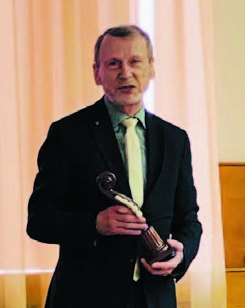
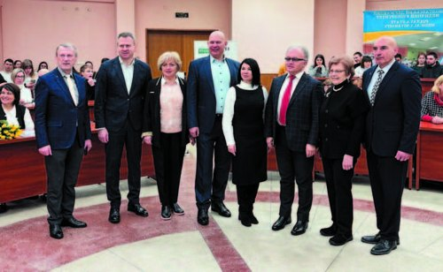
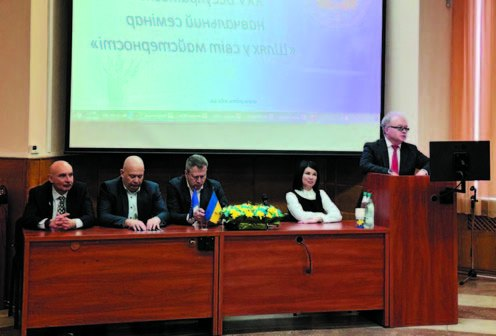
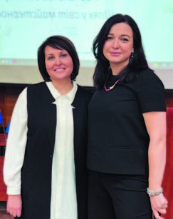
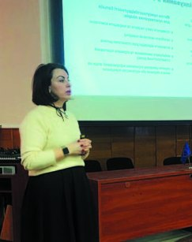
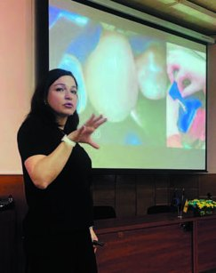
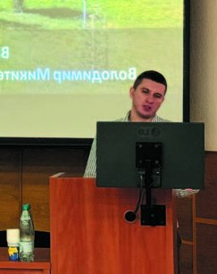
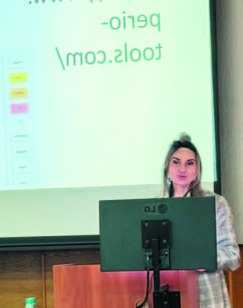

Семінари · журнал «ДентАрт» 2024 №1
«Шлях у світ майстерності» – історія, клінічні настанови, старт для фахового злету
У дружній та урочистій обстановці 9 лютого 2024 року у Полтаві відбувся навчальний семінар, приурочений до 25-річчя Всеукраїнського конкурсу «Шлях у світ майстерності».
Було відзначено, що за чверть століття конкурс пройшов значну еволюцію. Почавшись як регіональний із застосуванням вітчизняного матеріалу Chrome-Light, він зростав у географічному охопленні, залучаючи лікарів-інтернів з інших регіонів України та з-за кордону, а також використовуючи матеріали відомих світових виробників. Оцінювання робіт стало доступним не лише для професійного журі, але й для онлайн-глядачів – друзів і колег учасників конкурсу.
На семінарі адміністрація Полтавського державного медичного університету висловила вдячність голові професійного журі, професорці Таїсії Скрипніковій за її багаторічну сумлінну працю та високий професіоналізм. За значний особистий внесок в організацію і проведення конкурсу окремі працівники були нагороджені відзнакою ректора та почесними грамотами ПДМУ.
Доповіді на семінарі виголосили головний лікар клініки-студії «Аполлонія» Сергій Радлінський, професорка Ірина Ткаченко, асистентка Ксенія Лазарєва, доценти Олена Бережна, Вікторія Шинкевич, Юлія Коробейнікова і Тетяна Хміль, лікар-стоматолог Вадим Піддубний. Також був запрошений минулорічний переможець Роман Моторний, який поділився своїм досвідом підготовки й участі в конкурсі «Шлях у світ майстерності» та успіхами вже як лікаря.
Доповідачі підкреслювали, що шлях навчання і вдосконалення лікарів нелегкий і багатоступеневий. В основі стоматологічної освіти лежать знання та вміння, якими лікарі оволодівають послідовно, поетапно, від фантомного курсу до клінічного, від простих маніпуляцій – до складних.
Кафедра післядипломної освіти лікарів-стоматологів постійно впроваджує нові види навчання, інноваційні стоматологічні технології, прилади та інструментарій.


Через терни до зірок!
Прикладом рейтингового виду навчання лікарів-стоматологів є поетапний професійний конкурс, який проводиться 25-й раз поспіль. Ідея була не нова: за аналог було взято Призма-чемпіонат, організований Сергієм Радлінським. Сергій Володимирович запропонував для лікарів майстер-класу змагання, визначив стандарти якості в реставрації, розробив критерії оцінки робіт. Багато положень «Призма-чемпіонату» були враховані, реконструйовані під умови конкурсу молодих лікарів.
Тож на цьому семінарі Сергій Радлінський, головний лікар клініки-студії «Аполлонія» і викладач однойменного Навчального центру, виступив із доповіддю «Через терни до зірок!», де розповів про досвід проведення Призма-чемпіонату, який став першим конкурсом професійної майстерності у стоматології нашого часу і пройшов шляхом від локального заходу до розгалуженого міжнародного чемпіонату.
«Цей конкурс був започаткований як засіб зворотного зв'язку зі стоматологами, які пройшли практичні курси з художньої реставрації зубів у нашому навчальному центрі. Назва Призма-чемпіонат походить від реставраційного матеріалу Призма ЕйПіЕйч, який був провідним матеріалом у програмі реставрації «Дентсплай». Починаючи з 1992 року, в Полтаві під егідою Української медичної стоматологічної академії та спільно з фірмою «Дентсплай» проводилися навчання з прямої реставрації зубів за біоміметичним підходом.
Реставрація зубів завжди була приватною справою, тому клінічні змагання спрямовані на розкриття цієї процедури, допомагаючи пацієнтам, стоматологам, викладачам та організаторам охорони здоров'я. Перед початком змагань ми розповідаємо фіналістам, що одного з них журі визначить Призма-чемпіоном, і він/вона отримає Золоту віолончель та багато інших нагород. Проте головне полягає в іншому: усі фіналісти виконують реальні реставрації в контрольованих умовах з подальшим публічним обговоренням. Це допомагає багатьом стоматологам піднятися на вищий рівень у своїй професії, пацієнтам – уникнути недосконалого стоматологічного лікування, викладачам – вдосконалити програми навчання, а організаторам охорони здоров'я – планувати стоматологічну допомогу населенню», – підкреслив Сергій Радлінський.
25 років Всеукраїнському навчальному семінару


Тетяна ХМІЛЬ, доцент кафедри післядипломної освіти лікарів-стоматологів ПДМУ, виступила з доповіддю «25 років Всеукраїнському навчальному семінару «Шлях у світ майстерності»».
На межі століть, у 2000 році, склалася творча співпраця кафедри післядипломної освіти лікарів-стоматологів і вітчизняних виробників стоматологічного обладнання та матеріалів, що дозволило провести їх клінічну апробацію, впровадити у навчальний та лікувальний процес, організувати спочатку курси зі стандартної техніки реставрації, а потім досягти високої форми впровадження – конкурсів.
Це був перший в Україні конкурс професійної майстерності лікарів-стоматологів, який проходив із використанням матеріалів та обладнання вітчизняного виробництва. Для його проведення НВФ «КромДентал» надала фотополімерний реставраційний матеріал «Кромлайт-Р», НВФ «ЛюксДент» – багатофункціональний фотополімеризатор UFL112. Робочі місця конкурсантів були обладнані стоматологічними установками «Сатва-компакт» НВФ «Сатва» (м. Тернопіль). Підготовка лікарів-стоматологів з таким забезпеченням дала можливість проводити на початку 2000-х років (протягом 3-х років) регіональні змагання під девізом «Вітчизняній продукції – нове тисячоліття».
За 25 років конкурс став традиційним, відомим серед лікарів-стоматологів, динамічно удосконалювався відповідно до ходу розвитку стоматології. Він присвячений відзначенню 9 лютого Міжнародного дня стоматолога.
На слайдах презентації учасники семінару побачили знайомі обличчя, почули відомі прізвища, тому що багато учасників конкурсу стали відомими викладачами, сертифікованими лекторами, створили стоматологічні клініки, навчальні центри, проводять майстер-класи…
Доповідачка розповіла про всіх переможців конкурсу за 25 років та деякі особливості змагання в тому чи іншому році.
У І-му конкурсі в 2000 році взяли участь 7 лікарів – досвідчених клініцистів зі стажем роботи від 5 до 10 років із 4-х міст: Полтави, Києва, Севастополя, Світловодська. Цей перший регіональний конкурс професійної майстерності лікарів-стоматологів засвідчив, що використовуючи українські технології в стоматології, можна отримати високі естетичні результати у реставрації зубів. Організатори і учасники конкурсу керувалися девізом «Feci, quod potui, faciant meliora potentes» (Я зробив, що зміг, хто може, нехай зробить краще).
Конкурс 2002 року вразив незвичним складом учасників: це були лікарі-інтерни, клінічні ординатори-іноземці. Переможцем став Васфі Аль Хадід (Йорданія). Конкурс вийшов за рамки регіонального і став, по суті, міжнародним.
Організатори оцінили цю ситуацію і зробили висновки: на засіданні опорної кафедри у цьому ж році отримали схвалення відбір контингенту учасників конкурсу, розширення географії матеріалів, необхідність подальшого розвитку під девізом «Шлях у світ майстерності».
Із цікавих фактів: на конкурсі 2005 року відомий вже натепер лікар Ігор Кролівець (Харків) зустрів свою майбутню дружину, нині визначного ортодонта Тетяну Корнієнко (Львів).
У стоматології усі ці роки відбувалися зміни в оснащенні робочих місць, організації клінічного прийому, рівнях надання стоматологічної допомоги, вимогах до спеціалістів. З 2019 року конкурс отримав можливість проходити в сучасних умовах клінічної бази кафедри – у клініці «Професорська стоматологія».
У 2023 році, в складних умовах війни, у конкурсі взяли участь 8 учасників. Переможцями стали: І місце – Кристина Костюк (Полтава); ІІ місце – Валентин Пілат (м. Хмельницький); Гран-прі – Роман Моторний (Полтава).
Цікава гендерна статистика конкурсу, вона справді сучасна: кількість учасників – 181, жінок і чоловіків – майже рівнозначні числа.
Протягом 25 років адміністрація ПДМУ, стоматологічна спільнота з ентузіазмом завжди відгукуються на заохочення учасників і переможців конкурсу. Їх нагороджували стоматологічними матеріалами, сертифікатами на навчальні семінари «ДентАрт», майстер-класи Аллана Дойча, передплатою та комплектами журналів «ДентАрт», «Український стоматологічний альманах».
Психологічні та юридичні аспекти первинної консультації в дитячій стоматології
Олена БЕРЕЖНА, доцент кафедри післядипломної освіти лікарів-стоматологів Полтавського державного медичного університету, виступила з доповіддю «Психологічні та юридичні аспекти первинної консультації в дитячій стоматології».
Доповідачка наголосила на тому, що психологічні знання про пацієнта можуть послужити значним доповненням до спеціальної медичної освіти. Людину як особистість характеризують статус, суспільні функції, ролі, мотивація, світогляд, характер, схильність та ін. Від індивідуально-психологічних та вікових особливостей людини багато в чому залежить, як люди долають хвороби, життєві труднощі, конфлікти та стрес. Оскільки стоматолог працює в системі «людина – людина», а не «лікар – хворий орган», найбільш успішними зазвичай виявляються лікарі, які вміють знайти підхід до пацієнта.
Стоматологи мають враховувати аспекти особистісних характеристик індивіда, і передусім вік. Чому? По-перше, не кажучи вже про стан органів ротової порожнини, потенціали людини, які можуть бути використані в стоматологічній практиці, у різні періоди життя різні. По-друге, вікові та диференціальні особливості впливають на сприйняття, поведінку, оцінювання діяльності, у тому числі і на відвідування стоматолога.
Незважаючи на простоту, вікова мінливість має складну специфіку: з одного боку, вона залежить від етапів життя людини, з іншого – етапи розвитку залежать від її способу життя, форм діяльності, активності, характеру. На перший погляд, реальна допомога психолога потрібна тільки в дитячій стоматології, тому що на відміну від ситуації лікування дорослих пацієнтів, з дітьми на стоматологічному прийомі часто виникають проблеми, які можуть стати перешкодою при проведенні лікувальних заходів, відтак організація дитячого прийому потребує особливого підходу.
Основа успішної роботи в дитячій стоматологічній практиці будується на здатності медперсоналу управляти поведінкою дитини під час прийому. У деяких клініках вже є штатна одиниця психолог.
Для того, щоб зробити роботу ергономічною і не витрачати час на непродуктивні прийоми, слід враховувати вік пацієнта.
Характеризація прямої реставрації: ефекти, маскування, підфарбовування
Ксенія ЛАЗАРЄВА, асистентка кафедри післядипломної освіти лікарів-стоматологів ПДМУ, виступила з доповіддю «Характеризація прямої реставрації: ефекти, маскування, підфарбовування».
У доповіді розглядалися різноманітні аспекти прямої реставрації зубів та сучасні концепції їх відновлення, починаючи з видів прямої реставрації та різних підходів до відновлення зубів. Внаслідок впливу зовнішніх чинників або індивідуальних причин зуби можуть зазнавати візуальних і структурних змін, які помітні оточуючим. Розуміння взаємозв'язку оптичних властивостей зубних тканин з параметрами колірної конструкції реставрації виносить на передній план основні принципи вибору кольору реставрації з чітким його прогнозуванням. В естетично значущих зонах для гармонійного поєднання реставрації з оточуючими структурами необхідно, крім колірної конструкції, враховувати також фізіологічні та індивідуальні особливості стану зубів, сусідніх з планованою реставрацією.
У доповіді було розглянуто кілька клінічних прикладів відновлення з різним поєднанням застосування композитних фарб як допоміжних елементів для характеризації реставрації, що допоможуть реставрувати зуби зі зміненим кольором, а також використовуються для маскування або імітації індивідуальних особливостей, таких як флюороз, тріщини чи пігментовані фісури. Часто стандартні протоколи підбору кольору композиту не забезпечують повну інтеграцію реставрації. Корекцію кольору оператор може здійснювати шляхом використання фарб або опакових дентинних композитних мас. Природні зуби часто мають певні індивідуальні характеристики, наприклад, білі або янтарні включення, тріщини емалі, мамелони, плями. Використання характеризації реставрації полегшує можливість створення ілюзії природних зубів. Тут особлива увага потрібна оптичним включенням вродженого характеру, таким як флюороз і гіпоплазія, також ми маємо додаткові можливості відтворення ефекту опалесценції емалі та ефекту гало.
Реставрація зубів сучасними керамічними і композитними матеріалами тісно пов'язана з розумінням естетичної функції зуба, яка характеризується оптимальними розмірами, формою, рельєфом, а також оптичними властивостями емалі і дентину. Тверді тканини відбивають, пропускають, розсіюють промені світла, формуючи колірні відтінки, опалесценцію, флуоресценцію зуба. Вираженою ознакою емалі є здатність поєднувати названі оптичні ефекти. Тож потрібно враховувати при виборі матеріалу для реставрації зубів опаковість, мануальні властивості та відтінок для різних технік відновлення.
Доповідачка наголосила, що оптичні ефекти, які використовуються в реставрації, створюються не лише забарвленням, а й формоутворенням, конструюванням з урахуванням індивідуальних властивостей зубів пацієнтів, а також тонкощами фінішної обробки та полірування реставрації. Така комбінація технік для створення макро- та мікрорельєфу і мінімальне підфарбовування допоможуть досягти оптимального результату.
Аналіз роботи відділення щелепно-лицевої хірургії в умовах воєнного стану

Вадим ПІДДУБНИЙ, лікар-стоматолог відділення щелепно-лицевої хірургії Полтавської обласної клінічної лікарні імені М. В. Скліфосовського, свою доповідь присвятив аналізу роботи цього відділення в умовах воєнного стану.
Обласне відділення щелепно-лицевої хірургії – важливий лікувально-діагностичний центр області, воно забезпечує лікувально-діагностичну та організаційно-методичну роботу з надання стаціонарної допомоги (III рівня) дорослому населенню, військовослужбовцям та внутрішньо переміщеним особам із щелепно-лицевою патологією, за винятком лікування хворих із злоякісними новоутвореннями.
Аналіз показників роботи відділення за 2023 рік засвідчив позитивні тенденції порівняно з 2022 роком. У 2022 році відділення пролікувало 1456 осіб, а у 2023 році цей показник збільшився на 19,5 % – до 1810 осіб. Питома вага сільських жителів серед пацієнтів також зросла, склавши у 2023 році 54,9 %, що на 3,7 % більше, ніж у 2022 році.
Кількість оперативних втручань у 2023 році збільшилася на 24,5 %, до 2673 операцій, що на 656 операцій більше, ніж у 2022 році. Кількість планових операцій зросла на 4,4 %, становлячи 5,2 % від загальної кількості, тоді як кількість ургентних операцій зменшилася.
Показники основних нозологічних форм коливалися протягом року. За даними за 2023 рік, перші три місця посіли флегмони та абсцеси (29,1 %), атипове видалення зубів (21,6 %) і цистектомія (9,2 %).
У 2023 році відділення впроваджувало нові методики, такі як ендоскопічна синусотомія верхньощелепного синуса при синусліфтингу та артроцентез СНЩС, що дозволило скоротити середній термін перебування хворого на ліжку.
У відділенні наразі проводиться багато реконструктивних втручань після травм внаслідок поранень військових та їх реабілітація.
З 25.11.2022 року у відділенні щелепно-лицевої хірургії працює ендоскопічна-артроскопічна стійка, це дало змогу збільшити спектр надання допомоги військовим та цивільному населенню. За допомогою цієї стійки стало можливим хірургічне лікування СНЩС. У 2023 році проведено 42 оперативні втручання пацієнтам з патологією СНЩС. Також ендоскопічна-артроскопічна стійка активно використовується при лікуванні гострих та хронічних синуситів, при переломах лицевого скелета та реконструктивних операціях обличчя.
Сучасне лікування пародонтиту. Чому це важливо для стоматологів усіх спеціальностей

Вікторія ШИНКЕВИЧ, доцент кафедри післядипломної освіти лікарів-стоматологів ПДМУ, виступила з доповіддю «Сучасне лікування пародонтиту. Чому це важливо для стоматологів усіх спеціальностей».
У сучасній стоматології питання лікування пародонтиту – на передньому краї. Ця проблема вимагає постійного вдосконалення знань і навичок стоматологів, оскільки захворювання пародонта впливають на багато аспектів здоров'я і якості життя пацієнтів. Стоматологи повинні розуміти, що такі захворювання – це не лише гінгівіт і пародонтит, але й інші складові, такі, як втрата прикріплення та періодонтальної зв'язки. Розуміння цих аспектів допомагає ефективніше лікувати пацієнтів і уникнути ускладнень.
Сучасна термінологія вимагає використання англійського перекладу, перейменовуючи «пародонтит» на «періодонтит» і переосмислюючи суть підходів до лікування. Стоматологи активно обговорюють ідею комплексного лікування пародонтиту. У цьому контексті важливо звернути увагу на стадії пародонтиту. Провідні вчені-періодонтологи вказують на потребу комплексної реабілітації та хірургічних втручань у тяжких випадках. Актуальність оновлення і трактування класифікації та клінічних настанов стає дедалі важливішою для успішного лікування.
У доповіді були розглянуті питання контролю над запаленням періодонта, а також оновлення кроків лікування пародонтиту через призму перших кроків та необхідності комплексної реабілітації. Крім терапії, ортопедичного лікування та хірургічних втручань, важливими елементами комплексної реабілітації пацієнтів з періодонтитом є розв'язання проблем жувальної дисфункції, уникнення вторинної оклюзійної травми та запобігання патологічній міграції зубів. Ці аспекти доповнюють терапевтичні заходи і спрямовані на досягнення більш повного та стабільного клінічного ефекту. Жувальна дисфункція і вторинна оклюзійна травма можуть бути наслідком незбалансованої оклюзії, що створює додаткове навантаження на пародонтальні тканини і сприяє прогресуванню періодонтиту. Використання ортодонтичного лікування, наприклад, за допомогою брекет-систем, може частково вирішити ці проблеми. Брекети дозволяють виправити неправильне розташування зубів і патологічну міграцію, подовжити коронки.
Комплексне лікування періодонтиту передбачає не лише терапевтичні та хірургічні заходи, а й урахування додаткових аспектів, таких як ортопедичне лікування та розв'язання проблем жувальної дисфункції і патологічної міграції. Тільки комплексний підхід може забезпечити успішне і стабільне відновлення здоров'я пародонта та функціональну стабільність прикусу у пацієнтів з періодонтитом.
Стандартизація стоматологічної допомоги з приводу лікування карієсу зубів у дорослих

Ірина ТКАЧЕНКО, завідувачка кафедри пропедевтики терапевтичної стоматології ПДМУ, свою доповідь присвятила темі «Стандартизація стоматологічної допомоги з приводу лікування карієсу зубів у дорослих: клінічна настанова і стандарт лікування».
Лікарі різних спеціальностей, зокрема лікарі-стоматологи-терапевти, лікарі-стоматологи загальної практики та гігієністи зубні, мають бути обізнані з основними чинниками ризику та клінічними проявами карієсу зубів з метою його профілактики, ранньої діагностики, неінвазивних та інвазивних методів лікування для запобігання розвитку ускладнень. Клінічна настанова створена відповідно до Методики розробки та впровадження медичних стандартів медичної допомоги на засадах доказової медицини, затвердженої наказом МОЗ України від 28.09.2012 р. № 751 «Про створення та впровадження медико-технологічних документів зі стандартизації медичної допомоги в системі Міністерства охорони здоров'я України», зареєстрованим у Міністерстві юстиції України 29.11.2012 р. за № 2001/22313 (зі змінами).
Клінічна настанова є адаптованою для системи охорони здоров'я України версією документа CariesCare practice guide: consensus on evidence into practice, що був визнаний робочою групою як приклад найкращої практики надання медичної допомоги пацієнтам із карієсом зубів та ризиком його виникнення і ґрунтується на даних доказової медицини стосовно ефективності і безпеки медичних заходів та організаційних принципів її надання.
Карієс зубів та його ускладнення можуть загострювати або викликати системні захворювання, які серйозно знижують якість життя людини і спричиняють великий економічний тягар. Результати дослідження глобального тягаря хвороб, опубліковані журналом Lancet у 2017 році, засвідчили, що серед 328 захворювань перше місце за поширеністю посідає карієс постійних зубів. Близько 2,44 мільярда людей у всьому світі мають цю хворобу.
Запобігання виникненню карієсу протягом усього життя повинно бути основною метою плану лікування цього захворювання. Однак якщо воно вже виникло, перед клініцистами постає завдання визначення відповідного підходу для зупинки наслідків каріозного процесу, що може бути досягнуто шляхом втручань на рівні пацієнта та управління проявами захворювання на рівні ураження.
Втручання на рівні пацієнта спрямовані на відновлення мінералізаційного балансу. Вони зазвичай вимагають належного дотримання пацієнтом дієти і передбачають, зокрема, консультування з питань дієти та інструкції з гігієни ротової порожнини. Оцінка факторів ризику карієсу (ФРК) у пацієнтів, аналіз і контроль факторів виникнення карієсу, формування індивідуальних планів лікування та ведення карієсу з урахуванням ФРК стали новим трендом сучасного лікування карієсу зубів.
CariesCare International – організація, яка просуває орієнтований на пацієнта підхід до лікування карієсу, заснований на оцінці ризиків, розроблений для стоматологічної спільноти. Це система, орієнтована на результати лікування, спрямована на підтримку здоров'я ротової порожнини та збереження структури зубів у довгостроковій перспективі. На сьогодні існує кілька класифікацій та стандартів лікування карієсу зубів, які широко застосовуються у світі. Міжнародна система виявлення та оцінки карієсу (ICDAS) була створена у 2002 році, а в 2009-ому до неї були додані тести на визначення інтенсивності карієсу для розробки модифікованого стандарту клінічної класифікації карієсу – ICDAS-II. На основі ICDAS запропоновано Міжнародну систему класифікації та управління карієсом (ICCMS).
Лікування карієсу зубів має здійснюватися протягом усього життя. Слід враховувати фізіологічні особливості пацієнтів різного віку і складати індивідуальний план лікування карієсу зубів з урахуванням різних факторів та рівнів ризику.
Основні аспекти художньої реставрації зубів

Юлія КОРОБЕЙНІКОВА, доцент кафедри пропедевтики ортопедичної стоматології Полтавського державного медичного університету, виступила з доповіддю «Основні аспекти художньої реставрації зубів».
У сучасній стоматології спостерігається зростання популярності саме естетичних стоматологічних робіт у населення, зростає частота звернення пацієнтів, особливо молодого віку, які цікавляться покращенням зовнішнього вигляду, а не просто лікуванням. На сьогодні у багатьох дослідженнях описано відмінності між сприйняттям пацієнтом і лікарем-стоматологом естетики фронтальних зубів і підкреслено важливість визначення лікарем естетичних очікувань пацієнта до початку лікування.
Тому стандартною практикою є визначення критерію естетики стоматологічної роботи завжди індивідуально для кожного пацієнта. Для калібрування сприйняття естетичного між пацієнтом та лікарем зручно використовувати методику попереднього моделювання реставрації, особливо коли йдеться про роботу кольорами по шкалі бліч від 1 до 4. Це дає можливість точного вибору безпосередньо в ротовій порожнині на готовому зубі майбутньої форми та вигляду реставрації.
Одним із аспектів моделювання є використання певного розрахунку. «Золотий процентаж» – метод розрахунку естетичного співвідношення зубів у зубному ряду, що був запропонований Snow в 1999 році; він застосовував пропорцію таким чином: кожний зуб фронтального сегмента верхньої щелепи займає визначений відсоток відстані між іклами при фронтальному огляді, тобто видима ширина кожного з центральних різців повинна становити 25,0 % відстані між іклами, бічні різці – 15,0 %, а видима частина ікол – 10,0 %. Саме таке співвідношення формує найбільш естетичну усмішку, що в подальшому й найменували «золотим процентажем».
RED-пропорція (Recurrent Esthetic Dental/оборотна естетична пропорція зубів) була запропонована Rosenstiel, Ward і Rashid, які наводили такі аргументи, як можливі відмінності значення точних пропорцій у пацієнтів залежно від форми їх обличчя, будови скелета й типу тілобудови. Автори припустили, що природні варіації розмірів зубів і пропорції усмішки можна описати чіткими математичними правилами. RED-пропорція рекомендує використовувати сталу пропорцію в редукції видимої ширини фронтальних зубів від центральної лінії до ікла. Точне значення такої пропорції може відрізнятись у пацієнтів залежно від довжини коронок фронтальних зубів верхньої щелепи. Менша RED-пропорція характерна для пацієнтів ектоморфної тілобудови, і більшу RED-пропорцію можна знайти у пацієнтів ентоморфної тілобудови.
Одні з найсучасніших досліджень опису основних естетичних пропорцій видимої частини верхнього зубного ряду, які були виконані R. Kalia у Великій Британії (2021), встановили модифіковані значення «золотого процентажу» в ширині зубів фронтальної ділянки – 22,5 % центральний різець, 15,0 % бічний різець і 12,5 % ікло.
У доповіді були представлені численні клінічні випадки, розглянуті основні етапи реставрації зубів, а також класифікація інструментів та сучасних матеріалів, необхідних для проведення цієї процедури.
Отже, семінар став поглядом як на пройдений стоматологією чвертьстолітній шлях, так і на її сучасні досягнення, методики, підходи до лікування пацієнтів і подальший розвиток її перспективних напрямків, технологій.